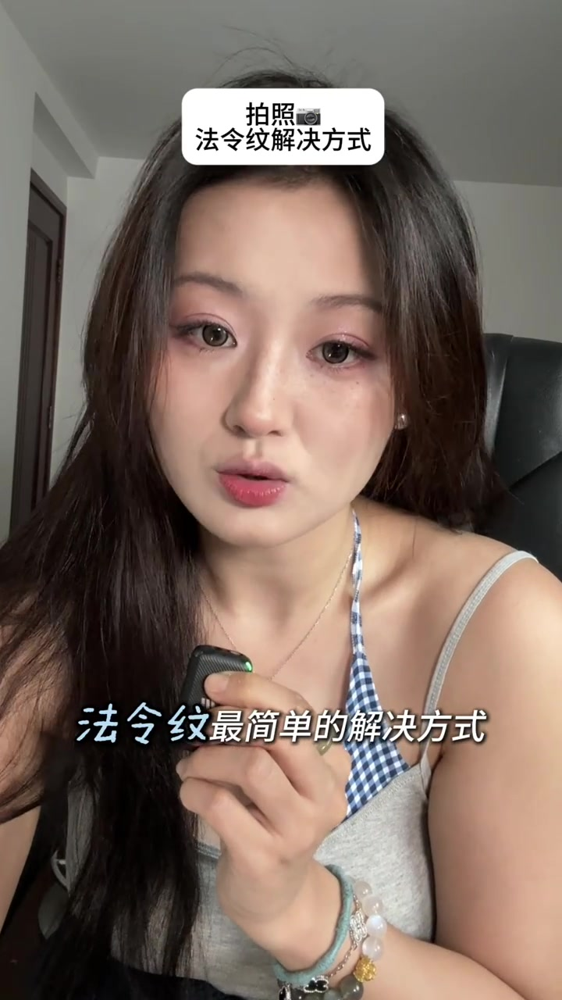
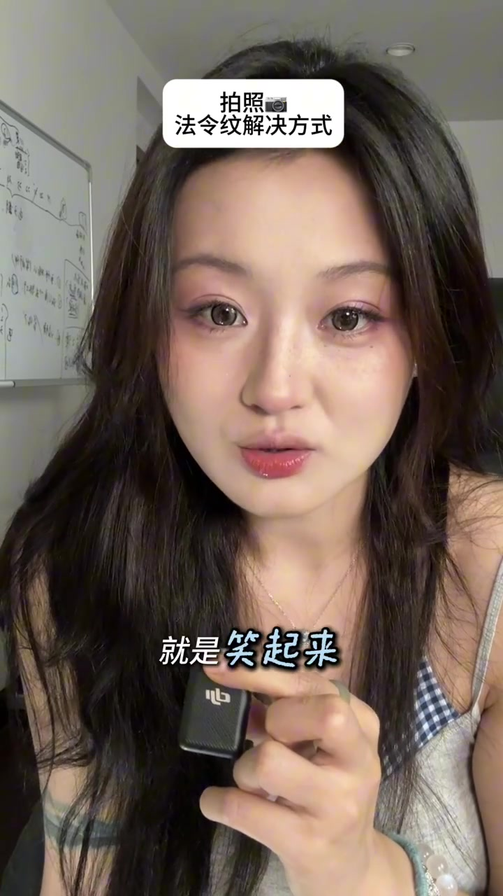
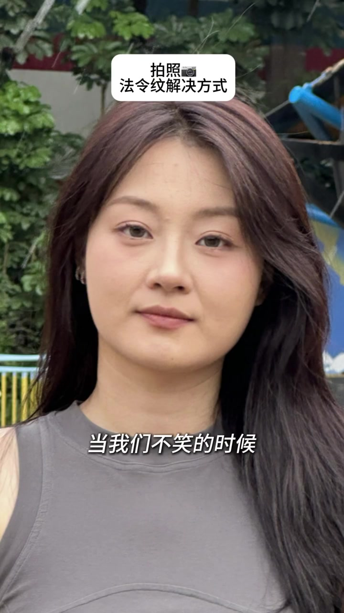
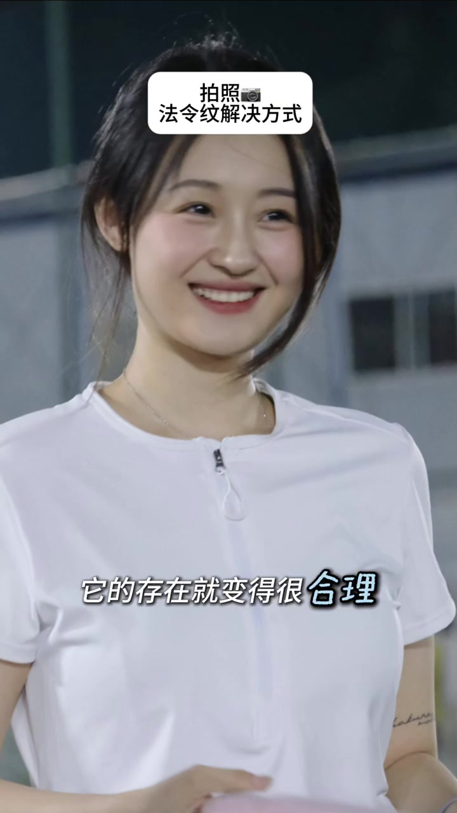
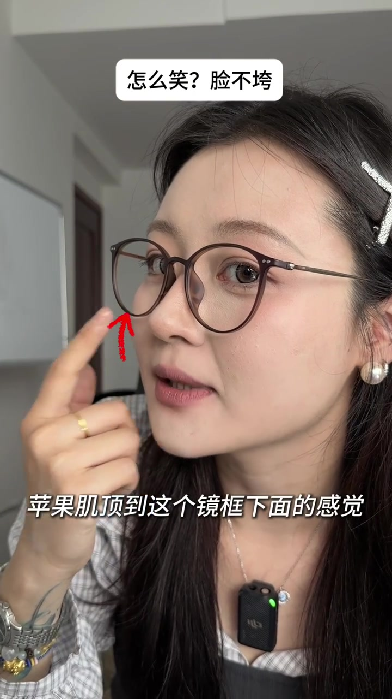
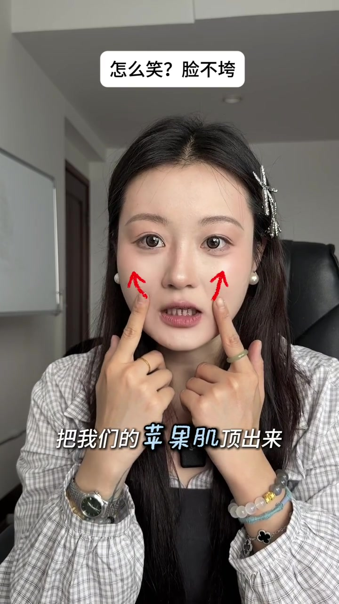
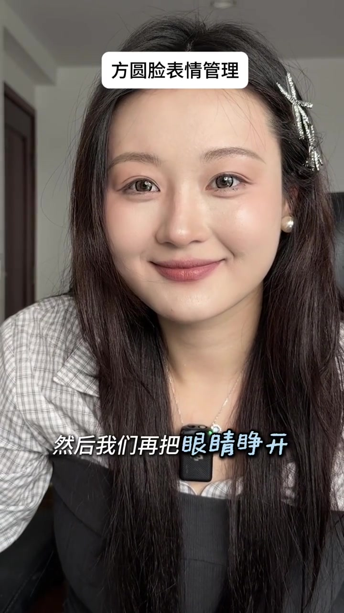

开场：拍照时法令纹，打光最简单，但灯带不走
UP 主开场顶栏打出「拍照📷 法令纹解决方式」。她先承认：拍照时法令纹最简单的解决方式，一定是打光——随即举起圆形补光灯，把脸照亮。下一句立刻拆台：不可能时刻带着这盏灯，那该怎么办？答案不绕弯——让法令纹变得合理；大白话，就是笑起来。
画面字幕大意：「法令纹最简单的解决方式」「但是我们不可能时刻带着这个灯」「就是笑起来」
说明：Whisper 把「法令纹」听成「法令文」，把开场句听成「拍照是法令文……」。下文以可见字幕为准；末尾转录区仍保留原始分段。


对比：不笑时法令纹凸显，一笑就合理
镜头切到户外静态照。不笑时，法令纹被点得很显眼；一旦笑起来，同一道纹的存在感变得「合理」——UP 主说，比起一味抹掉法令纹，这样反而更生动好看。话题自然转到下一问：笑，又该怎么笑好看？
画面字幕：「当我们不笑的时候」「它的存在就变得很合理」
Whisper 将「一味的抹掉法令纹 / 生动好看」误识为「一位的模特法令文 / 深度好看」。


方法：戴镜框练笑，把苹果肌顶到镜框下
章节顶栏换成「怎么笑？脸不垮」。UP 主戴上细框眼镜示范：笑的时候要找到苹果肌顶到镜框下面的感觉；用嘴角发力，把苹果肌顶出来。红箭头标在镜框下缘与脸颊抬起方向，把抽象的「笑好看」落成可感知的肌肉位置。
画面字幕：「苹果肌顶到这个镜框下面的感觉」「把我们的苹果肌顶出来」
Whisper 将「苹果肌 / 嘴角的发力」误识为「苹果机 / 嘴角的发射」。


逻辑链：脸垮源于泪沟与法令纹，根源是苹果肌下垂
讲解穿插肖像对比：脸之所以显垮，源于泪沟和法令纹；而这两者又源于苹果肌下垂。所以要通过练习笑容，把苹果肌往上提，自然改善泪沟与法令纹。收束一句立场很清楚——纹路是否存在不重要，它合理就行；这样人像照才会更好看。
画面字幕大意：「就是源于泪沟和法令纹」「所以我们要通过练习笑容」「改善你的泪沟和法令纹」「它合理就行」
Whisper 将「泪沟 / 你的照片 / 纹路」误识为「内构 / 人他照 / 文路」。
方圆脸特判：多半深覆合，千万别咬合着笑
顶栏切到「方圆脸表情管理」。UP 主点名：咱们这种方圆脸，一般都是深覆合——所以嘴巴千万不能咬合着去笑。无论是否露齿，牙齿都不能咬紧，要分开。这一条把「笑好看」从审美建议，收成咬合习惯上的硬约束。
画面字幕：「咱们这种方圆脸」「它都一般都是“深覆合”」「我们的嘴巴千万不能咬合的去笑」「我们的牙齿都不能咬紧」
Whisper 将「方圆脸 / 深覆合 / 露齿」误识为「方圆聊 / 这身不合 / 露尺」。
完整复盘：嘴角顶苹果肌，下巴挣出，先嘴后眼
UP 主带做一整遍：先用嘴角顶起苹果肌，靠近镜框；同时牙齿不咬合；再让下巴找到向前发力的感觉——因为阔面短脸、下巴偏后时，后置自拍会把下巴拍得很短，一定要把下巴也「挣出来」。最后若仍觉得笑得尴尬，可以先把嘴巴笑起来，再睁开眼睛，得到一个完整笑容。
画面字幕：「先用嘴角顶起我的苹果肌」「然后下巴找到这样这样发力的感觉」「因此一定要把我们的下巴也挣出来」「然后我们再把眼睛睁开」
Whisper 将「下巴 / 在后的情况 / 挣出来 / 眼睛睁开」误识为「下把 / 后置情况 / 蒸出来 / 眼睛展开」。
